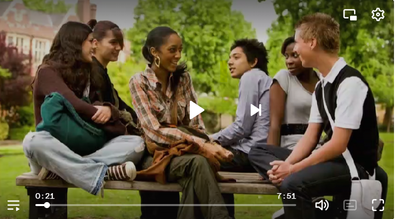

Facilitador - Población Estudiantil - Toma de decisiones
Referencia
Saavedra, A. (2013). Toma de decisiones. Aprendiendo a emprender. [Video]. You Tube. https://www.youtube.com/watch?v=Rj6UtCq-8-8
Facilitador - Padres - Población Estudiantil - Sustancias psicoactivas - Drogas - Información
Referencia
Instituto Nacional sobre el Abuso de Drogas. (2019). Desarrollo del cerebro adolescente. [Video]. You Tube. https://www.youtube.com/watch?v=H6lhsbG7Ilk
Facilitador - Padres - Población Estudiantil - Habilidades para la vida - Resolución de conflictos
Referencia
Oficina de las Naciones Unidas contra la Drogas y el Delito. (2020). Habilidades para la Vida 11: Resolución de Conflictos. [Video]. YouTube. https://www.youtube.com/watch?v=zQR3MNkEVBA
Facilitador - Padres - Población Estudiantil - Habilidades para la vida - Manejo de emociones y sentimiento -
Referencia
Oficina de las Naciones Unidas contra la Drogas y el Delito. (2020). Habilidades para la Vida 04: Manejo de Emociones y Sentimientos. https://www.youtube.com/watch?v=bFTdVjZ1qgU
- Facilitador - Padres - Población Estudiantil - Habilidades para la vida - La comunicación - Relaciones interpersonales - Familia.
Referencia
Oficina de las Naciones Unidas contra la Drogas y el Delito. (2020). Habilidades para la Vida 08: Trabajo en Equipo. https://www.youtube.com/watch?v=GlD-2oISjfE
Facilitador - Padres - Población Estudiantil - Habilidades para la vida - Pensamiento crítico
Referencia
Oficina de las Naciones Unidas contra la Drogas y el Delito. (2020). Habilidades para la vida. Pensamiento crítico. [Video]. You Tube. https://www.youtube.com/watch?v=kehO6vJcZ2o
Facilitador - Padres - Población Estudiantil - Habilidades para la vida - Manejo de tensiones - Estrés
Referencia
Oficina de las Naciones Unidas contra la Drogas y el Delito. (2020). Manejo de tensiones y estrés. [Video]. You Tube. https://www.youtube.com/watch?v=F5yi1cuo5rI
Facilitador - Padres - Población Estudiantil - Habilidades para la vida - Pensamiento crítico
Referencia
Oficina de las Naciones Unidas contra la Drogas y el Delito. (2020). Pensamiento creativo. [Video]. You Tube. https://www.youtube.com/watch?v=AD_z1W6wI3g
Facilitador - Padres - Población Estudiantil - Habilidades para la vida - Pensamiento crítico
Referencia
Oficina de las Naciones Unidas contra la Drogas y el Delito. (2020). Empatía. [Video]. You Tube. https://www.youtube.com/watch?v=Aei-rLzGPrc
Facilitador - Padres - Población Estudiantil - Habilidades para la vida - Manejo de tensiones y estrés
Referencia
Murillo Chaves, H. (2020). Habilidades para la vida en el ámbito educativo. Manejo de tensione y estrés. [Video]. You Tube. https://www.youtube.com/watch?v=yPffLXzKJnk
Facilitador - Padres - Población Estudiantil - Habilidades para la vida - Manejo de tensiones y estrés -
Referencia
Murillo Chaves, H. (2020). Habilidades para la vida en el ámbito educativo. Empatía. [Video]. You Tube. https://www.youtube.com/watch?v=Wu5Qqi-c77I
___________________________________________________________________________________________________________
Facilitador - Padres
Facilitador - Padres - Comunicación asertiva - Canción - Reflexión
Referencia
Aguilar, M. (2016). Gotas en la arena. [Video]. You Tube. https://www.youtube.com/watch?v=XDeXZxvVY58
Facilitador - Padres - Población Estudiantil - Toma decisiones - Sustancias Psicoactivas
Referencia
De la Rosa. E. (s.f.). El circo de la mariposa. [Video] You Tube. https://youtu.be/CkdI1F5xxtE
Facilitador - Padres - Población estudiantil - Adicción
Referencia
Cruz Roja Española (2017). ¿Qué es una adicción? [Video] You Tube. https://www.youtube.com/watch?v=rCUAFw6dx-g
Facilitador - Padres - Evaluación Programa Aprendo a Valerme por Mí Mismo
Referencia
Instituto sobre Alcoholismo y Farmacodependencia. (2016). Programa Aprendo Valerme por Mí Mismo (a): Presentación de resultados. [Video] You Tube. https://www.youtube.com/watch?v=qP3gdbdIKMY
Facilitador - Padres - Población Estudiantil - Sustancias Psicoactivas
Referencia
Ministerio de Salud de Ecuador (s.f.). ¿Qué son las drogas? [Video] You Tube https://www.youtube.com/watch?v=huFd_7UW_Lw
Facilitador - Padres - Población Estudiantil - Sustancias Psicoactivas
Referencia
G9 Divulgación Científica. (s.f.). ¿Qué hacen las drogas en nuestro cerebro? [Video] You Tube https://youtu.be/HL3IE2CB6XA?si=GDC6FJv7FBgVPxSn
Facilitador - Padres - Población Estudiantil - Sustancias PsicoactivasReferenciaAMAT Torrelavega (s.f.). Hablemos sobre drogas.[Video] You Tube https://youtu.be/2BVrI9HJo7A?si=tOA5N2zncd2v8zCP
NOTA: Observar el video y actividades en la dirección que se proporciona
Facilitador - Comunicación asertiva-
ReferenciaLifeder, (2017). 5 dinámicas de comunicación asertiva para adultos y niños. [Video]. Lifeder (2017). niños. https://www.dailymotion.com/video/x73vnzk